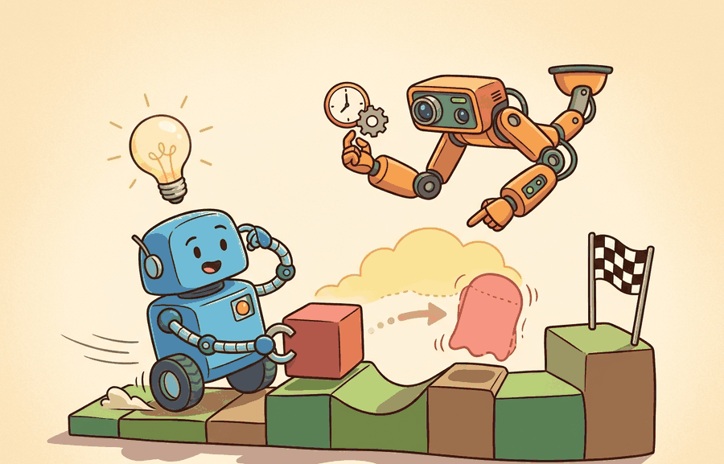

"The first bug in a robot simulator is usually a promise nobody wrote down."
A Constraint-Checking AI Agent

This section assumes familiarity with rigid-body dynamics from section 6.2 and the agent-environment loop from section 2.1. If you are already comfortable with how integrators and constraint solvers work, you can skim to section 11.2 for simulator-specific design tradeoffs. The physical modeling concepts introduced here recur in Part III alongside domain randomization in section 13.1 and GPU-parallel rollouts in section 12.1.
A robot hand trained on ten million simulated grasps can fail the moment it touches a real object, not because the neural network is wrong, but because the simulator never modeled friction correctly. That gap between virtual and physical is the central engineering problem of embodied AI right now, and closing it starts with understanding exactly what a simulator does and does not promise.
A physics simulator updates a state through time by applying forces, constraints, contacts, and actuator commands, then exposes part of that state as observations for the agent loop from Chapter 2. Every modeling choice inside that update, integrator, contact solver, friction cone, sensor noise, is a potential source of sim-to-real error. You will map those choices explicitly, learn which ones matter most for locomotion versus manipulation, and build the mental model needed to evaluate MuJoCo, Isaac Lab, and Genesis on their own terms in the sections ahead.
The Physics Contract
A simulator answers a question: given the current state $s_t$, an action $a_t$, and a time step $\Delta t$, what state should come next? For rigid-body robotics, the state usually includes body poses, velocities, joint positions, joint velocities, actuator states, and contacts. The update can be summarized as:
$$s_{t+1} = \operatorname{step}(s_t, a_t, \Delta t, \theta)$$
The parameters $\theta$ contain masses, inertias, joint limits, friction coefficients, damping, solver tolerances, sensor noise, and contact settings. This equation looks compact, but each term is a modeling choice that can decide whether a learned policy transfers to reality.
The solver settings deserve special attention because they are not cosmetic. Timestep, integrator choice, constraint softness, contact margin, and solver iteration count decide how much penetration, bounce, jitter, and energy drift the simulator permits. A good experiment records these values next to the policy checkpoint because changing them can change the learned behavior as much as changing a reward term.
Algorithm: Physics Simulator State-Step
Input: current state $s_t = (q, \dot{q}, x_\text{contacts})$, action $a_t \in \mathcal{A}$, timestep $\Delta t$, model parameters $\theta$ (masses, inertias, friction $\mu$, solver tolerances)
Output: next state $s_{t+1}$, observation $o_{t+1}$
- Apply actuator model. Map $a_t$ through the actuator transfer function to generalized forces $\tau = \pi_\text{act}(a_t, \dot{q}, \theta)$.
- Compute free acceleration. Solve $M(q)\ddot{q} = \tau + \tau_\text{gravity}(q, \theta) - C(q, \dot{q})\dot{q}$ for unconstrained $\ddot{q}$, where $M$ is the mass matrix and $C$ captures Coriolis and centripetal terms.
- Detect contacts. Find all body pairs with signed distance $d_i \leq \epsilon_\text{margin}$; record contact points, normals $\hat{n}_i$, and penetration depths $\delta_i$.
- Formulate constraint problem. Assemble the linear complementarity problem (LCP): find contact forces $\lambda_i \geq 0$ such that $\delta_i = 0$ and friction forces satisfy $\|\lambda_i^\text{tan}\| \leq \mu \lambda_i^\text{norm}$ (Coulomb cone).
- Solve constraints. Run the projected Gauss-Seidel (or Newton) solver for up to $N_\text{iter}$ iterations until residual $\|\nabla_\lambda \mathcal{L}\| \leq \epsilon_\text{solver}$.
- Integrate velocities. Update $\dot{q}_{t+1} = \dot{q}_t + (\ddot{q} + M^{-1}J^\top\lambda)\,\Delta t$, where $J$ is the contact Jacobian.
- Integrate positions. Advance $q_{t+1} = q_t + \dot{q}_{t+1}\,\Delta t$ using the chosen integrator (semi-implicit Euler or Runge-Kutta).
- Stabilize constraints. Apply Baumgarte stabilization or impulse correction to reduce residual penetration $\alpha \delta_i$ accumulated over previous steps.
- Sample sensors. Compute observation $o_{t+1} = g(q_{t+1}, \dot{q}_{t+1}, \lambda, \theta_\text{sensor})$, optionally adding noise $\mathcal{N}(0, \sigma^2)$.
- Record and return. Set $s_{t+1} = (q_{t+1}, \dot{q}_{t+1}, \lambda)$; log $(\theta, \Delta t, N_\text{iter}, \epsilon_\text{solver})$ alongside the state for reproducibility.
| Component | What it means | Why it matters for action | Common failure |
|---|---|---|---|
| Bodies | Rigid or deformable objects with mass and inertia | Determines acceleration, impact, and balance | Incorrect inertia makes policies learn unrealistic motion |
| Joints | Allowed motion between bodies | Defines the action space and robot kinematics | Wrong axis or limit creates impossible behaviors |
| Contacts | Collision points and constraint forces | Controls grasping, walking, pushing, and sliding | Contact jitter hides real failure modes |
| Friction | Resistance to sliding or rolling | Decides whether a grasp holds or a foot slips | Over-tuned friction makes sim easier than reality |
| Sensors | Observed signals derived from state or rendering | Creates the partial observability seen by the agent | Perfect sensors inflate evaluation scores |
The most useful simulator is not the one with the longest feature list. It is the one whose simplifications you can name, measure, and include in the evaluation plan. This is the bridge from Chapter 9 to the transfer work in Chapter 13.
Sensors Shape What the Agent Can Learn
Sensor modeling matters because a policy trained on perfect joint-angle readouts will fail on a real robot where encoders have quantization noise, IMUs drift, and force-torque sensors saturate at impact. The simulation sensor model is the only thing standing between a policy that learns robust state estimation and one that memorizes exact numbers that hardware can never reproduce. Locomotion policies that rely on noiseless velocity feedback, for instance, often freeze or oscillate on hardware because their first real observation is already out of distribution.
Mechanically, a simulator computes the true state each step and then applies a sensor transfer function: it selects the relevant state variables, applies any calibrated bias, adds sampled Gaussian or uniform noise, clips to the sensor range, and optionally introduces a one-step delay to match real hardware latency. The result is the observation vector the agent receives, not the ground-truth state. Adding even modest noise (standard deviation 0.01 rad on joint positions) during training forces the policy to average across uncertainty, producing behavior that generalizes to real sensors.
A Minimal Contact Stepper
Code Fragment 1 below implements a tiny one-dimensional contact model with NumPy. It is not a replacement for a simulator. Its purpose is to make the contract visible: integration, gravity, floor contact, and friction are separate modeling decisions.
# Minimal physics stepper: integrate a falling block with floor contact.
# NumPy is used only for clear scalar math and reproducible arrays.
# The output shows how contact and friction change state over time.
import numpy as np
height = 0.20
velocity = -0.10
dt = 0.02
gravity = -9.81
restitution = 0.25
floor_height = 0.0
trajectory = []
for step in range(8):
velocity = velocity + gravity * dt
height = height + velocity * dt
if height < floor_height:
height = floor_height
velocity = -restitution * velocity
trajectory.append((step, round(height, 4), round(velocity, 4)))
for row in trajectory:
print(row)(0, 0.1941, -0.2962) (1, 0.1842, -0.4924) (2, 0.1705, -0.6886) (3, 0.1528, -0.8848) (4, 0.1312, -1.081) (5, 0.1057, -1.2772) (6, 0.0762, -1.4734) (7, 0.0428, -1.6696)
Code Fragment 1 uses about 20 lines to teach the state update. In practice, MuJoCo reduces the same rigid-body stepping pattern to a model load plus repeated mj_step calls, while handling articulated bodies, constraints, contacts, actuator dynamics, sensors, and solver settings internally. The hand-built stepper remains useful because it teaches what to inspect when a full simulator behaves strangely.
Contacts Are The Hard Part
Free-space motion is usually not where robot simulation becomes surprising. Contact is harder because the simulator must prevent interpenetration, estimate collision points, solve constraint forces, approximate friction cones, and remain numerically stable, making contact the primary source of sim-to-real error. A grasp that succeeds in simulation because friction is too generous is not a robot skill. It is a measurement error.
Most engines therefore expose a contact model rather than a single truth about contact. A stiff contact setting can reduce visible penetration but create jitter or smaller stable timesteps. A softer setting can make training smoother but hide impact failures. The validation question is concrete: if friction, restitution, timestep, and solver iterations move within plausible ranges, does the same policy still satisfy the task metric?
Consider a specific case: a gripper policy trained in MuJoCo with a table friction coefficient of 1.0 and a contact solver running 20 iterations at a 5 ms timestep. Moving to the real robot, the measured rubber-on-ABS friction is 0.55 and the controller runs at 8 ms. In simulation the object stays put under a 2 N lateral force; on hardware the same force slides it 3 cm before the gripper reacts. The policy succeeds in simulation because the contact model was more forgiving than the real surface, not because the grasp strategy was robust. Recording the friction value and timestep alongside the policy checkpoint would have flagged the mismatch before the hardware trial.
Think of the contact constraint problem like stacking books on a table. Each book cannot pass through the surface below it, and the table pushes back with exactly as much force as needed to keep it in place, never more. If you then slide one book sideways, the friction between covers either holds it (force inside the cone) or lets it slip (force at the cone boundary). The solver does the same negotiation for every contact point simultaneously: it finds the smallest set of forces that prevents any object from sinking into another while keeping every friction force within its permitted range. There is no single formula for the answer because each contact point's force depends on all the others, so the solver iterates, adjusting estimates until the whole stack is consistent.
When two bodies overlap at the end of an integration step, the simulator computes constraint forces that push them apart without violating friction limits. Most engines formulate this as a linear complementarity problem (LCP): find contact forces such that penetration is zero and friction forces stay inside a cone defined by the friction coefficient. Solvers approximate this cone with a polygon (typically 4 or 8 sides in MuJoCo) and iterate until residual falls below a tolerance. The number of iterations and the cone approximation are the two settings that most directly control whether a simulated grasp is physically plausible or just numerically convenient.
Choose the simulator by the physical mechanism being tested: contact stiffness, friction cone behavior, actuator limits, sensor timing, and reset semantics matter more than benchmark reputation.
If a policy only works when contact parameters are tuned to a narrow value, the simulator is not validating the policy. It is training the policy to exploit the simulator. This is why later chapters treat domain randomization, system identification, and real-world evaluation as part of one workflow.
Students often assume that a physics simulator reproduces the full physical world and that a successful simulation result therefore implies the robot will behave correctly on hardware. This is wrong because every simulator models only a named, finite set of phenomena: rigid-body dynamics, a small set of joint types, an approximate contact and friction model, and a simplified sensor transfer function. Phenomena such as cable flex, motor heating, joint backlash, soft-body deformation, aerodynamic drag, and electrical noise are absent unless explicitly added. In embodied AI the correct mental model is that simulation success means the agent solved the task under the modeled phenomena only; whether those phenomena cover what matters on the real platform is a separate question that requires the practical recipe in this section and the domain randomization work in Chapter 13.
Practical Recipe
- Write down the state variables the simulator owns and the observations the agent receives.
- Identify the contacts that decide success: gripper-object, foot-ground, wheel-floor, drone-air, or tool-surface.
- Record friction, restitution, damping, contact margin, timestep, integrator, and solver tolerances in the experiment config.
- Run one perturbation sweep over each critical contact or solver parameter before trusting a result.
- Keep logs that separate physics failure, perception failure, policy failure, and evaluation failure.
For a tabletop pushing task, do not start by asking whether Isaac Lab or MuJoCo is faster. Start by asking whether object mass, table friction, contact geometry, camera pose, and action frequency match the task. Once those are written down, speed becomes meaningful because you know what the simulator is accelerating.
Expected output: A simulator report for this section should include the state variables, the observation mapping, the contact parameters, the solver settings, and a perturbation table showing whether the policy remains stable under plausible physics changes.
A simulator is a promise about the next state. The debugging trick is to ask which promise failed: the body model, the contact model, the sensor model, or the solver that glued them together.
Pick a task from your own work. Can you name the three physical parameters that would most change the outcome? If the answer is no, the simulator choice is premature.
Modify Code Fragment 1 so the block starts with a horizontal velocity and loses 10 percent of that velocity every time it touches the floor. Explain which line represents a friction approximation and which line represents a contact approximation.
Current robot-learning pipelines expose contact modeling error in quantifiable ways. Isaac Lab's GPU-parallel rollouts (tens of thousands of Anymal-C or Unitree H1 locomotion environments running simultaneously at 4,000+ Hz wall-clock) reveal that policies sensitive to friction coefficients in the 0.4-0.6 range fail within 2-3 gait cycles on real hardware even when simulation success exceeds 95 percent. The Genesis simulator (2024) introduced differentiable contact gradients, letting a Franka Panda grasping policy receive an analytical signal about how much changing the friction coefficient by 0.1 shifts the expected grasp success rate, rather than discovering that sensitivity only after hardware trials. The 2025-2026 direction is system identification in the simulator loop: fitting per-object friction and restitution from real RGB-D point clouds (as in the MuJoCo system-identification tools demonstrated on YCB objects) before the policy trains, so the gap between the simulator's $\theta$ and the real surface is bounded rather than unknown. The open question is not how to make simulation faster, but how to make the simulator's error budget narrow enough that a policy trained on RT-X or Open X-Embodiment demonstrations transfers without per-platform re-tuning of contact parameters.
A physics simulator is a state-transition model plus a sensor model plus an error budget. If you cannot describe all three, you are not ready to interpret the result.
Section 11.2 turns this physics contract into concrete MuJoCo models written in MJCF or imported from URDF.
This paper explains the simulator design that made MuJoCo important for model-based control and robot learning. It is the best starting point for readers who want the mechanics behind constraints, contact, and control-oriented simulation.
Tedrake, R. (2024). Underactuated Robotics.
This open textbook gives the dynamics and control background needed to reason about simulated bodies and contacts. Readers who want deeper mathematical treatment of Chapter 6 and this section should keep it nearby.
Google DeepMind. "MuJoCo Computation Documentation."
The computation docs describe the pipeline from model data to constraints, sensors, and stepping. They are directly relevant when a reader wants to connect this section's simplified stepper to a production simulator.
Drake Development Team. "Drake Documentation."
Drake provides a rigorous systems view of dynamics, simulation, planning, and control. It is useful for readers who want to see physics simulation embedded inside a larger model-based design workflow.
Open Robotics. "Gazebo Documentation."
Gazebo documentation is relevant when the simulator must connect to robot middleware and sensor plugins. Readers focused on ROS 2 integration should compare these docs with the lower-level physics view in this section.